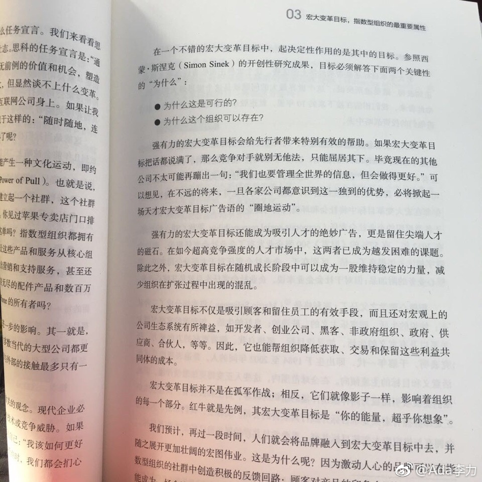

#读书#为公司宏大目标的几个理由：产生文化运动并吸引客户追随；圈地；吸引人才；建立公司的生态系统。
想起来微商领域深谙“圈地”，各种第一人，前面加上各种的细分词，比如微商奶爸第一人，微商引流第一人，微商网红第一人…。但这些称号都称不上宏大目标，因为全是个人目标，跟其他人一点关系都没有。相反例子，樊登读书会的目标是“让三亿中国人爱上读书”，这个目标就有号召力，你向外传播推荐读书会的时候，也不会觉得low。
宏大目标其实也是筛选，越尖端的人才，越有参与改变世界的兴趣。大多数人要的是安安稳稳赚些钱，踏踏实实过日子，会觉得这类宏大目标全是忽悠，可能还觉得创始人是疯子。
孙正义在只有两个员工时就宣布以后自己将来会是世界首富，他俩依次是第二富，第三富，据说第二天这俩员工就辞职了，大概是觉得老板脑子有些问题。不过呢，确实很多老板的宏大目标是忽悠，可这也是一种冒险和赌博吧，你敢不敢赌眼前这个看起来头脑不太正常的人，是否是下一个孙正义。要说老板肯定是会忽悠的，孙正义是世界首富的时候，他公司里有几个员工能上富豪排行榜的？
做不寻常事情的时候，就要吸引不寻常的人。那么，就一定要有宏大目标。
想起来微商领域深谙“圈地”，各种第一人，前面加上各种的细分词，比如微商奶爸第一人，微商引流第一人，微商网红第一人…。但这些称号都称不上宏大目标，因为全是个人目标，跟其他人一点关系都没有。相反例子，樊登读书会的目标是“让三亿中国人爱上读书”，这个目标就有号召力，你向外传播推荐读书会的时候，也不会觉得low。
宏大目标其实也是筛选，越尖端的人才，越有参与改变世界的兴趣。大多数人要的是安安稳稳赚些钱，踏踏实实过日子，会觉得这类宏大目标全是忽悠，可能还觉得创始人是疯子。
孙正义在只有两个员工时就宣布以后自己将来会是世界首富，他俩依次是第二富，第三富，据说第二天这俩员工就辞职了，大概是觉得老板脑子有些问题。不过呢，确实很多老板的宏大目标是忽悠，可这也是一种冒险和赌博吧，你敢不敢赌眼前这个看起来头脑不太正常的人，是否是下一个孙正义。要说老板肯定是会忽悠的，孙正义是世界首富的时候，他公司里有几个员工能上富豪排行榜的？
做不寻常事情的时候，就要吸引不寻常的人。那么，就一定要有宏大目标。
- 